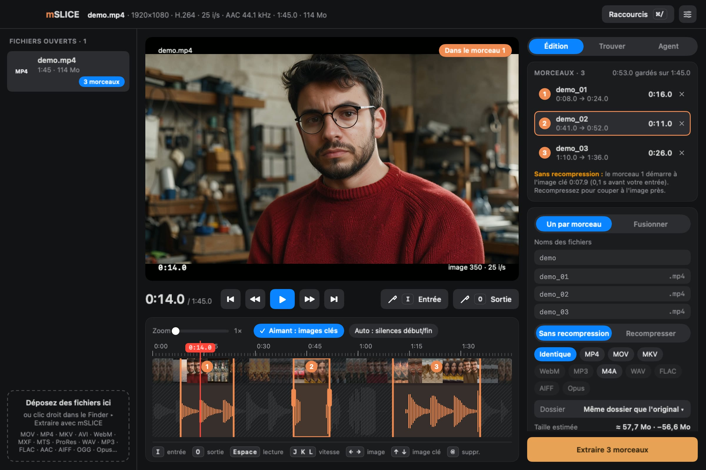
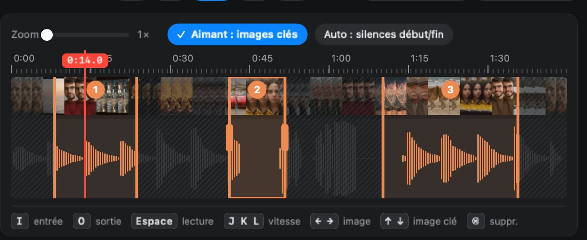
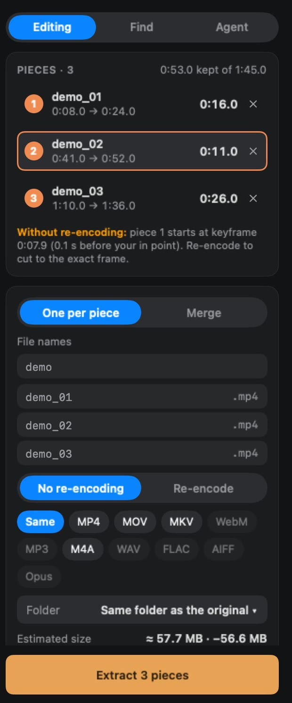
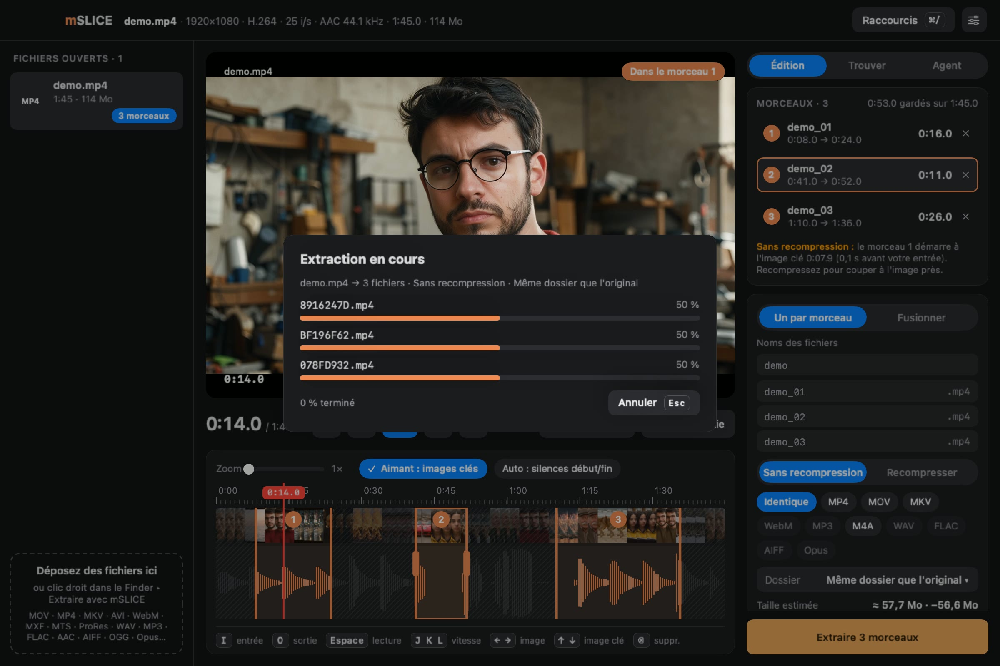
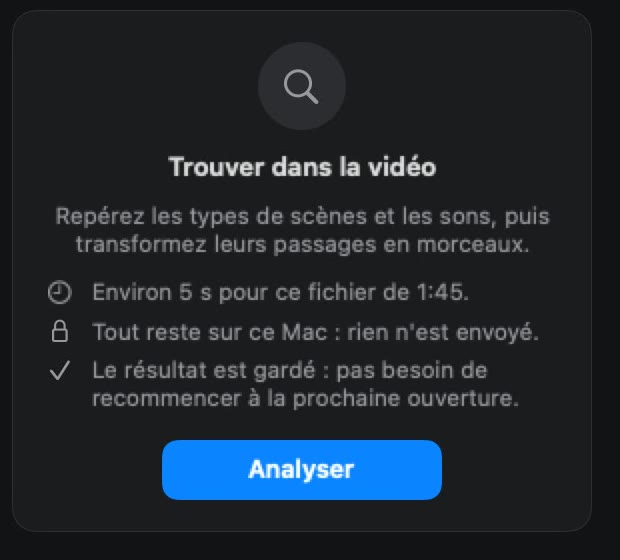
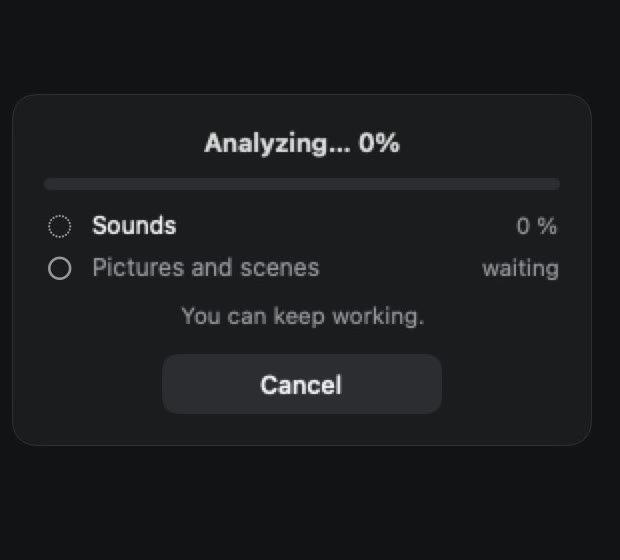
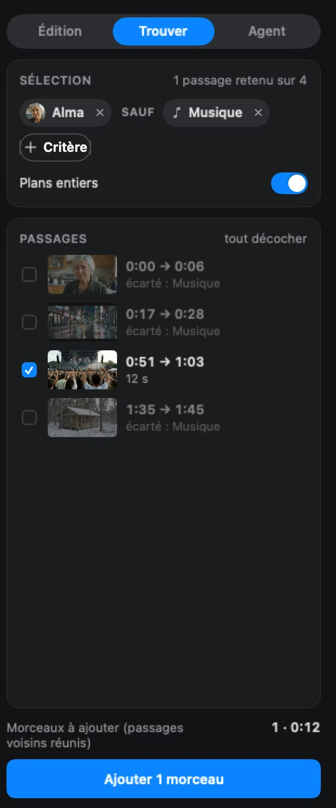
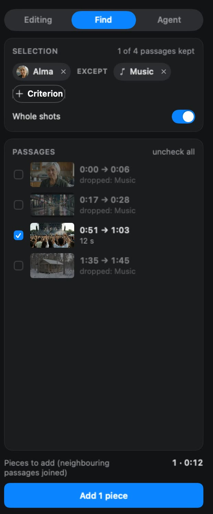
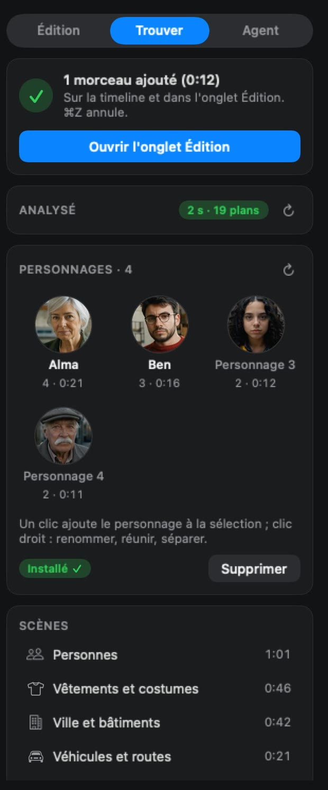

Des surfaces mates et plates, sans ombre ni dégradé : la hiérarchie vient des aplats, de filets d'un pixel et d'une seule couleur d'accent. Clair, sombre ou automatique.
Matte, flat surfaces with no shadows or gradients: hierarchy comes from flat fills, one-pixel hairlines and a single accent colour. Light, dark or automatic.
mSLICE · Interface · InterfaceDesign · Design
Design · Design
Une palette, deux thèmes
One palette, two themes
Fond#131316 fenêtre
Carte#1c1c1f contenu
Contrôle#2c2c31 champs, boutons
Texte#f5f5f7 principal
Accent#0a84ff choix actifs
Morceau#f08a52 timeline, « m »
Réussi#30d158 validé
Danger#ff453a tête de lecture
Fond#f4f1ec fenêtre
Carte#ffffff contenu
Contrôle#ebe6de champs, boutons
Texte#26231e principal
Accent#26231e choix actifs (encre)
Morceau#d9622b timeline, « m »
Réussi#3f8f5a validé
Alerte#b7791f à noter
Figure 1 — Sombre (haut) et clair (bas) : seuls le bleu système et l'orange du « m » sortent du gris chaud.
Background#131316 window
Card#1c1c1f content
Control#2c2c31 fields, buttons
Text#f5f5f7 primary
Accent#0a84ff active choices
Piece#f08a52 timeline, “m”
Success#30d158 valid
Danger#ff453a playhead
Background#f4f1ec window
Card#ffffff content
Control#ebe6de fields, buttons
Text#26231e primary
Accent#26231e active choices (ink)
Piece#d9622b timeline, “m”
Success#3f8f5a valid
Warning#b7791f heads-up
Figure 1 — Dark (top) and light (bottom): only the system blue and the orange “m” leave the warm grey.
Mat et plat : des aplats, un filet d'1 px, aucune ombre, aucun flou.
Le « m » orange : le « m » du nom mSLICE prend toujours l'orange du logo.
Police du système (SF Pro) ; chiffres de largeur fixe pour les durées.
Matte and flat: flat fills, a 1 px hairline, no shadow, no blur.
The orange “m”: the “m” of the mSLICE name always takes the logo's orange.
System font (SF Pro); fixed-width digits for durations.
Composants
BoutonPrincipalExtraireMusique ✕2 s · 19 plans
Components
ButtonPrimaryExtractMusic ✕2 s · 19 shots
DESKTOP MAC TOOLKIT · v1.34
mSLICE · Interface · InterfaceFenêtre · Window
Fenêtre · Window
Une fenêtre, huit zones
One window, eight zones

12345678
Figure 2 — La fenêtre (thème sombre, interface en français). / The window (dark theme, French interface).
Barre du haut / Top bar nom du fichier, raccourcis, réglages file name, shortcuts, settings
Fichiers ouverts / Open files un fichier = une session one file = one session
Lecteur / Player image exacte, suit la souris exact frame, follows the mouse
Commandes / Controls lecture, entrée I, sortie O play, in I, out O
Export / Export format, dossier, bouton Extraire format, folder, Extract button
DESKTOP MAC TOOLKIT · v1.35
mSLICE · Interface · InterfaceÉdition · Editing
Édition · Editing
Le bistouri et la timeline
The scalpel and the timeline

Figure 3 — Trois morceaux sur la timeline ; le 2 est sélectionné.
Figure 3 — Three pieces on the timeline; piece 2 is selected.
Français
I pose l'entrée, O pose la sortie et crée le morceau. Vous pouvez en garder autant que vous voulez, et glisser chaque poignée pour ajuster.
Aimant : images clés cale la coupure sur une image clé (utile en copie directe). Auto : silences début / fin retire d'un clic le silence du début et de la fin.
English
I sets the in point, O sets the out point and creates the piece. Keep as many as you like, and drag each handle to adjust.
Snap: keyframes snaps the cut to a keyframe (useful for direct copy). Auto: start/end silence removes the opening and closing silence in one click.
Sans recompression, une vidéo ne peut démarrer que sur une image clé : l'interface vous dit de combien l'entrée a reculé.
Without re-encoding, a video can only start on a keyframe: the interface tells you how far the in point moved back.
DESKTOP MAC TOOLKIT · v1.36
mSLICE · Interface · InterfaceÉdition · Editing
Édition · Editing
Morceaux et export
Pieces and export
Morceaux
Chaque morceau a un numéro et un nom de fichier. L'avertissement orange rappelle la copie directe.
Un par morceau, ou fusionné
Un fichier par morceau (demo_01…), ou tous les morceaux bout à bout.
Copie directe ou recompression
La copie directe est instantanée et sans perte. « Recompresser » coupe à l'image près.
Formats
MP4, MOV, MKV, WebM, MP3, M4A, WAV, FLAC, AIFF, Opus, ou le format d'origine.

Pieces
Each piece has a number and a file name. The orange warning reminds you about direct copy.
One per piece, or merged
One file per piece (demo_01…), or all pieces end to end.
Direct copy or re-encode
Direct copy is instant and lossless. “Re-encode” cuts frame-exact.
Formats
MP4, MOV, MKV, WebM, MP3, M4A, WAV, FLAC, AIFF, Opus, or the original format.
DESKTOP MAC TOOLKIT · v1.37
mSLICE · Interface · InterfaceÉdition · Editing
Édition · Editing
Pendant l'export
During export

Figure 4 — La feuille d'export : un fichier par ligne, avec sa progression.
Figure 4 — The export sheet: one file per line, with its progress.
Français
L'export ne bloque pas l'appli et s'annule à tout moment. Vos originaux ne sont jamais modifiés.
English
Export never blocks the app and can be cancelled at any time. Your originals are never modified.
Un clic droit dans le Finder propose aussi « Extraire des morceaux avec mSLICE… » et « Élaguer début et fin avec mSLICE… » pour plusieurs fichiers à la fois.
A right-click in the Finder also offers “Extract pieces with mSLICE…” and “Trim start and end with mSLICE…” for several files at once.
DESKTOP MAC TOOLKIT · v1.38
2
Trouver · Find
Trouver : de l'analyse aux morceaux
Find: from analysis to pieces
Un bouton, quelques secondes, puis des critères à combiner : scènes, sons, personnages. Ce qui est trouvé devient des morceaux ordinaires.
One button, a few seconds, then criteria to combine: scenes, sounds, characters. What is found becomes ordinary pieces.
mSLICE · Interface · InterfaceTrouver · Find
Trouver · Find
Avant et pendant l'analyse
Before and during analysis

Figure 5 — À gauche : avant. À droite : en cours.

Figure 5 — Left: before. Right: running.
Français
Avant : la carte donne la durée prévue (environ 1 s par minute de vidéo) et rappelle que tout reste sur le Mac.
En cours : on peut continuer à travailler, ou cliquer sur « Annuler ».
English
Before: the card gives the expected time (about 1 s per minute of video) and says everything stays on the Mac.
Running: you can keep working, or click “Cancel”.
Pour un fichier audio, l'analyse ne cherche que des sons.
For an audio file, the analysis only looks for sounds.
DESKTOP MAC TOOLKIT · v1.310
mSLICE · Interface · InterfaceTrouver · Find
Trouver · Find
Les résultats
The results
Personnages, scènes, sons
Chaque ligne donne le nombre de passages et la durée. Un clic ajoute la ligne à la sélection.
Piste de résultats
Sous la forme d'onde : orange pour les passages gardés, gris pour les passages écartés. Un clic y amène la tête de lecture.
Relancer
La flèche en haut de chaque carte relance l'analyse ou la reconnaissance.
Characters, scenes, sounds
Each row gives the number of passages and the duration. A click adds the row to the selection.
Results lane
Under the waveform: orange for kept passages, grey for dropped ones. A click moves the playhead there.
Run again
The arrow at the top of each card reruns the analysis or the recognition.
DESKTOP MAC TOOLKIT · v1.311
mSLICE · Interface · InterfaceTrouver · Find
Trouver · Find
La sélection
The selection

Critères
Chaque critère est une pastille. Cliquez sur ET ou SAUF pour changer. « + Critère » en ajoute un.
Plans entiers
Garde le plan complet autour de chaque passage. Éteint : marge de 0,3 s.
Passages
Cochez ou décochez. Les passages écartés restent visibles, grisés, avec la raison.
Ajouter
Le bouton annonce le nombre de morceaux et leur durée.

Criteria
Each criterion is a pill. Click AND or EXCEPT to switch. “+ Criterion” adds one.
Whole shots
Keeps the full shot around each passage. Off: 0.3 s margin.
Passages
Tick or untick. Dropped passages stay visible, greyed, with the reason.
Add
The button announces the number of pieces and their duration.
DESKTOP MAC TOOLKIT · v1.312
mSLICE · Interface · InterfaceTrouver · Find
Trouver · Find
Morceaux ajoutés
Pieces added

« Alma, sauf quand il y a de la musique, en plans entiers » : un seul morceau de 12 secondes.
Les morceaux ajoutés apparaissent en orange sur la timeline et dans l'onglet Édition.
⌘Z annule l'ajout d'un seul coup.
“Alma, except when there is music, whole shots”: a single 12-second piece.
Added pieces appear in orange on the timeline and in the Editing tab.